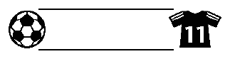

LBLabelariumBrother PT-D220
Search: warning, arrow, gift, margin…
Symbols600 in 30 categories
Frames99 designs, by number
Templates15 text · 10 pattern
Shortcuts22 key combos
Signs · shortcut key Space
1
3
4
9
19
25
Frame 35 · Soccer ball & jersey

Symbol → ◀/▶ Pictograph → OK → Space → ◀/▶ to 4 → OK